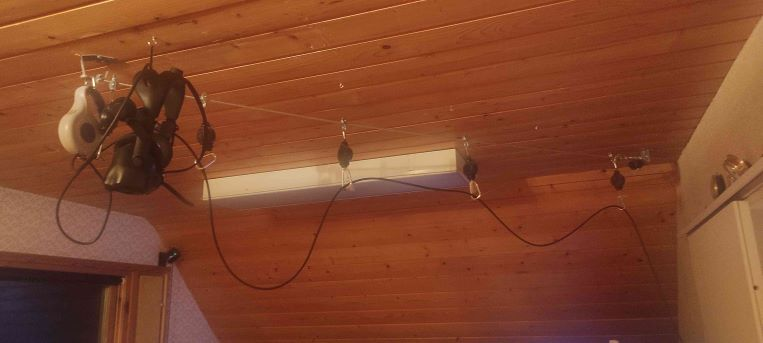

VR-laitteiden käyttö vaatii itselleen huomattavasti suuremman tilan, jos verrataan normaaliin tietokoneen käyttöön. Jotta käyttäjä mahtuu liikkumaan mielekkäästi VR-ympäristössä vahinkoja aiheuttamatta, olisi tilaa varattava mieluiten 3x3m tai yli. Tällaisen tilan vapauttaminen, muodostuu useimmissa asunnoissa helposti ongelmaksi, jos pelkästään huonekalujen sijoittelun takia. Tästä huolimatta, mitä suurempi käytettävissä oleva alue on, sen miellyttävämpää ja vapaampaa on myös toimiminen VR-ympäristössä, mahdollistaen siitä kaiken ilon irti saamisen.
Koska käyttöalue yleensä rajoittuu asunnon sisälle, on erittäin tärkeeä huolehtia ympäristön turvallisuudesta ja siitä, ettei esimerkiksi lemmikit pääse huoneeseen laitteiden käytön aikana aiheuttamaan kompastumisriskiä. Myös kaikki rikkoutuva, kuten televisiot ja ikkunat, kannattaa reilusti rajata käyttöalueen ulkopuolelle, jos suinkin mahdollista.

Yksi asia mikä väistämättä tulee eteen jokaiselle, joka langallisia laitteita meinaa käyttää, on kaapelien hallinta. Jos tähän ei panosta laisinkaan, on riskinä ilon loppuminen todella lyhyeen, joko laitteiden tai käyttäjän rikkoutumisen takia, kaapeleiden tarttuessa ei toivottuihin paikkoihin.
Tähän yleisimmin käytetty ratkaisu on nostaa kaapelin syöttöjärjestelmän kattoon, jonka toteutukseen on saatavilla edullisesti hankittavia joustolaitteita. Pelialuen kasvaessa näillä ”jojoilla” tulee tosin äkkiä liikerajat vastaan, joten suuremman pelialueen haluavat, joutuvat kehittelemään omat ratkaisunsa tähän. Projektissa esittelen oman toteutukseni, joskin hieman rujon näköisestä, mutta toimivasta ja helposti pelialueen mukaan skaalautuvasta pulley-mekanismista
- Suunnittele käyttöalue niin, että rikkoutuvat, ei siirrettävät kohteet ovat vähintään täyden kädenmitan päästä käyttöalueen ulkorajoista
- Mieti mihin meinaat VR-ympärtöä käyttää. Riittääkö sinulle all-in-one lasit, vai haluatko pitempikestoista huvia, jonka vuoksi joudut ehkä päivittämään tietokonettasi, jollet jopa hankkimaan kokonaan uuden?
- ÄLÄ OSTA HALVINTA pakettia. Väärässä paikassa säästämällä, mutta silti useita sajota euroja maksamalla, pilaat vain itseltäsi ihan uudenlaisen kokemuksen.
- Käy testaamassa VR-ympäristöä ennen hankintaa joko kaverisi luona, tai jonkin yrityksen tiloissa, joista voit vuokrata VR-laitteet ja tilan käyttöösi. Näin varmistut ettet ”uutuuden huumassa” tule tehneeksi todella kallista heräteostosta, joka sitten jääkin käyttämättä.